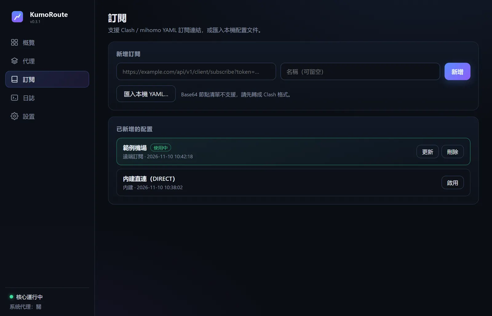

Windows 10/11
推薦安裝版支援原地覆蓋更新，只顯示精簡進度並自動重啟，不需先卸載；另有下載進度、取消與上一版失敗回復。
KumoRoute 把 Mihomo、Windows VPN、節點品質與網路診斷收進一個乾淨的本機桌面介面。沒有廣告，沒有帳號，也不會上傳你的設定。

Windows 推薦安裝版；ZIP 適合免安裝使用。Linux 與 macOS 提供原生打包。
安裝版支援原地覆蓋更新，只顯示精簡進度並自動重啟，不需先卸載；另有下載進度、取消與上一版失敗回復。
AppImage 免安裝直接執行；DEB 適合 Debian / Ubuntu。需要 WebKitGTK 4.1。
Intel 與 Apple Silicon 通用 DMG。未簽名版本首次開啟請右鍵 →「打開」。
不是把所有開關堆在一起，而是讓代理、VPN、DNS 與節點策略彼此協調。
只用代理、只用 VPN、兩者共存。連線後做真實 HTTP 驗證，失敗時自動斷線並恢復原本代理。
Verified + rollback延遲、成功率、抖動與最近失敗原因；支援固定、自動、最低延遲，連續逾時自動排除。
Quality first比對 DNS 解析出口與代理出口 IP，確認是否洩漏；同時檢查 DoH／DoT 衝突與 IPv6 優先問題。
Measured, not guessed每版一次提示、SHA256 驗證、下載進度與取消；安裝版直接升級，免安裝版獨立套用。
No silent install6／12／24 小時自動更新、全部訂閱一鍵刷新；核心重載失敗會回滚，備份可安全還原。
Auto-update + backup沒有帳號、沒有雲端同步。設定、訂閱與統計留在本機；VPN 密碼由 Windows 認證管理員保管。
Local by design不需要建立帳號，也不用把設定交給雲端。
Windows 使用安裝版自動更新；免安裝或 Linux／macOS 選擇對應套件。
貼上 Clash／Mihomo 訂閱連結，或匯入本機 YAML 設定檔。
開啟系統代理或 VPN；之後的節點、DNS 與更新都由 KumoRoute 協助處理。
深色／淺色主題，繁體中文／简体中文／English 即時切換。


只保留下載前真正需要知道的資訊。
這是未簽名程式的 SmartScreen 提示。專案開源，可自行檢查原始碼；設定簽章 secrets 後，Release 會自動產生 Authenticode 簽章。
不需要。Windows 安裝版使用原地更新模式，只顯示精簡進度並自動重啟；ZIP 版同樣會備份、覆蓋並套用更新，失敗時可還原上一版。設定、訂閱與 VPN 憑證都保存在使用者資料夾。
是。KumoRoute 只提供客戶端，不包含或販售節點與訂閱服務。請自備合法的 Clash／Mihomo 配置。
不會。設定、訂閱、日誌與統計保存在本機（%APPDATA%\\KumoRoute），沒有帳號系統或背景上傳。
v0.8.1 提供 Windows（安裝包／免安裝）、Linux（AppImage／deb）與 macOS（Universal dmg）。手機版尚未提供。
VPN 頁提供只用代理、只用 VPN、兩者共存。連線成功後會實際發送 HTTP 請求驗證；若 VPN 建立但網路不可用，會自動斷線並恢復原本代理。
不會。JSON 備份包含設定、遠端訂閱與本機 YAML；Windows VPN 憑證仍只存在系統認證管理員。還原前會先建立安全備份。
使用重測或整組測速。代理頁會顯示成功率、抖動與最近失敗原因，並自動排除連續兩次逾時的節點。
可以。首次啟動會自動遷移舊資料，憑證與設定不會因更名而遺失。
開源、本機優先，沒有帳號，也沒有廣告。